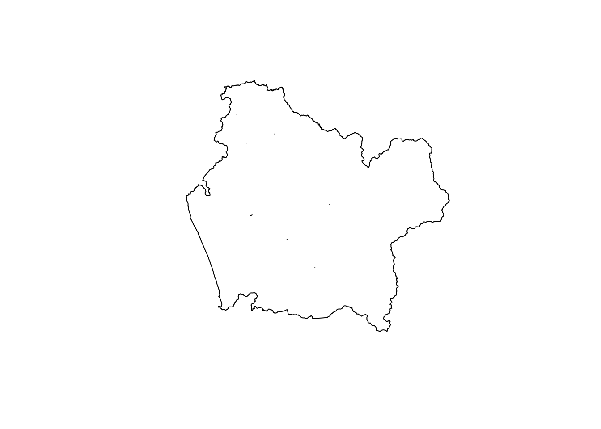
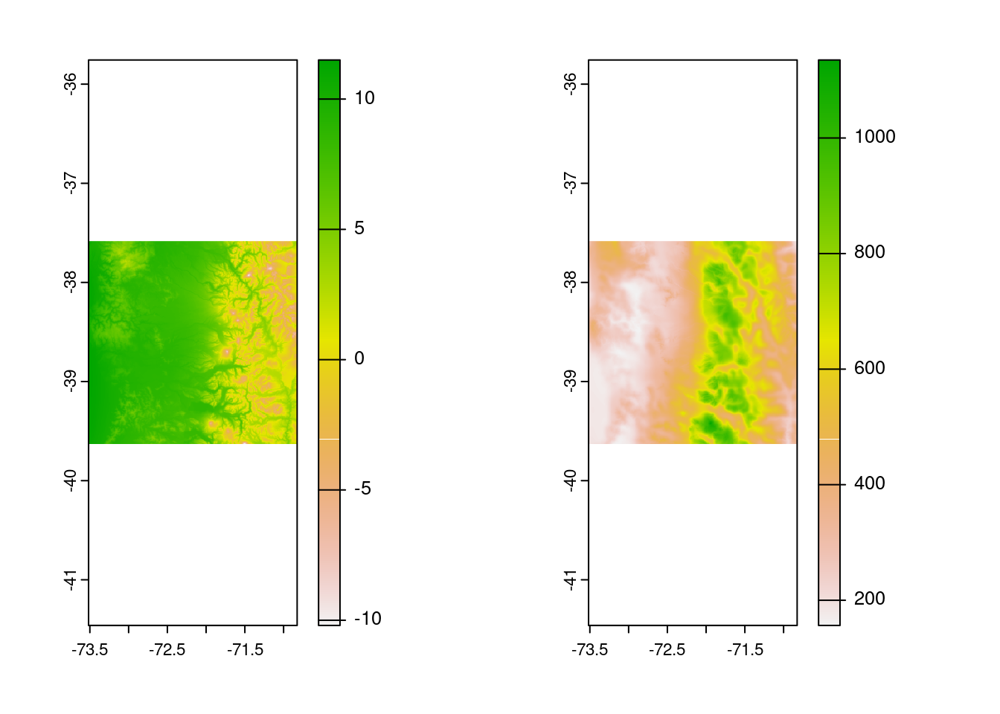
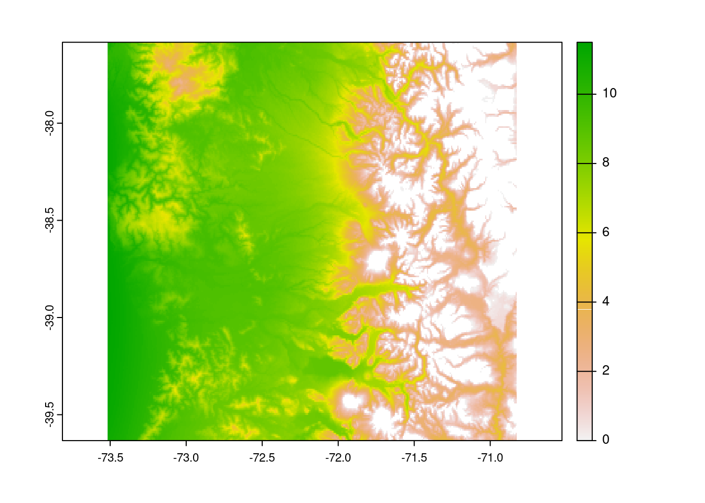
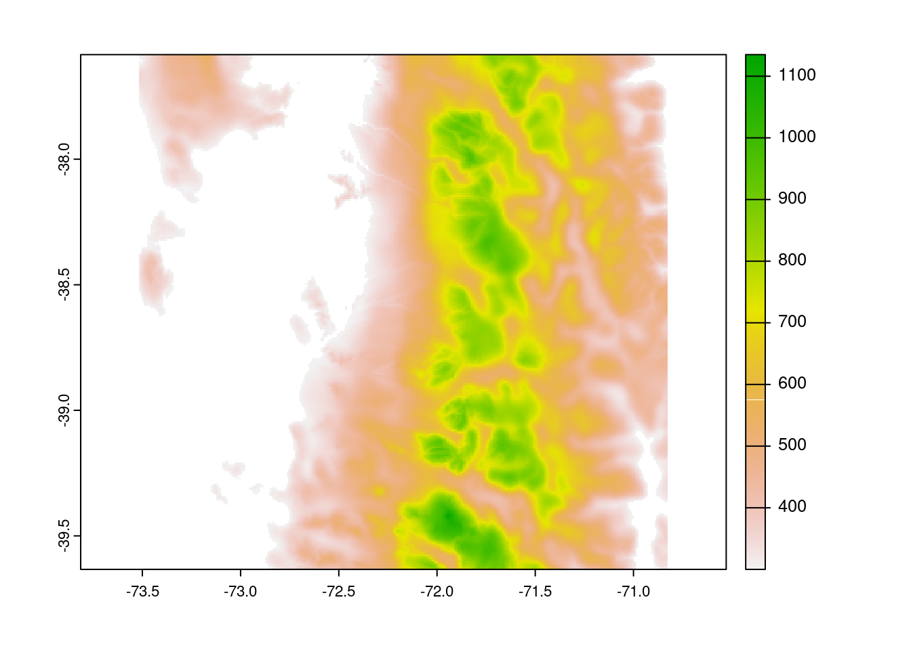

# instala los paquetes
install.packages(c('sf','terra'))
# carga los paqutes en el entorno de R y permite utilizar
# las funciones adicionales que contienen
library(sf)
library(terra)Taller 5 (IMSE1017)
Datos raster {terra}
Descripción
En las primeras clases de la asignatura se ha empezado a trabajar con el software R, partiendo por conocer la sintaxis, la IDE RStudio, las estructuras y tipos de datos. En el primer taller trabajó con datos que vienen incluidos en los paquetes base de R como mtcars, aplicando funciones que permitan identificar los tipos de objetos y su estructura, además de realizar proceso de indexación para diferentes tipos de objetos (ej, data.frame, matrix, listas). En el segundo taller, trabajó con datos climáticos en donde tuvo que importar los datos, realizar diferentes tipos de indexaciones, algunas operaciones matemáticas, y exportar los datos a un archivo. En el tercer taller comenzó a familiarizarce con datos vectoriales utilizando {sf}. Luego, el el taller número cuatro utilizó las operaciones geométricas con datos vectoriales.
Objetivo del taller
Trabajar con datos raster en R con el paquete {terra}
Paquetes R
Hasta el momento hemos trabajado con los paquetes que vienen inculidos en R base. Ahora empezaremos a trabajar con paquetes adicionales que no vienen instalados por defecto en R, por lo que deberá instalarlos. El paquete con el que trabajaremos este taller es {terra}, el cual nos permite trabajar con datos de tipo raster.
Para instalar los paquetes debe realizar lo siguiente:
Data
En el campus virtual, en la sección Actividades -> Talleres -> Taller5 se encuentran archivos de tipo vectorial y raster con los que se trabajará.
Para obtener los valores de precipitación debe multiplicar los valores por 0.01 Para obtener los valores de temperatura debe multiplica por 0.1 y restar 273.
¿Qué debe entregar?
Debeŕa utilizar RStudio para crear un script, en donde resolverá cada uno de los ejercicios. Debe utilizar los comentarios (#) para hacer una descripción del ejercicio e incorporar cualquier información que ayude a entender lo realizado. A modo de ejemplo:
# Ejercicio 1:
# comentario explicando lo que se hace
{
Aca va el script que resuelve el ejericio 1
}Debe guardar el script con el nombre taller5_grupo_{número_grupo}.R. Los archivos los debe subir en el campus virtual en la sección Actividades -> Talleres -> Taller5
Fecha de entrega
Viernes 18 de noviembre hasta las 13:00am
Ejercicios
Ejercicio 1 (10pts)
Cargue los archivos raster del mes de junio del año 2019, correspondientes a la temperatura media mensual (CHELSA_tas_v2.1_20190601.tif) y precipitación acumulada mensual del (CHELSA_pr_v2.1_20190601.tif). Asignelos a un objeto en R llamados temp y pre, respectivamente.
library(terra)terra 1.6.17temp <- rast('../data/CHELSA_tas_v2.1_20190601.tif')
pre <- rast('../data/CHELSA_pr_v2.1_20190601.tif')Ejercicio 2 (20pts)
Para obtenr los valores de temperatura debe multiplica temp0.1-273 y reemplace temp. Para obtener los valores de precipitación multiplique pre0.01 y reemplace pre.
temp <- temp*0.1-273
pre <- pre*0.01Ejercicio 3 (50pts)
Utilizando funciones de {terra} extraiga la resolucíon espacial, la cantidad de pixeles/celdas, cantidad de columnas, cantidad de filas y el sistema de referencia de coordenadas (SRC).
#temperatura
res(temp)[1] 0.008333333 0.008333333ncell(temp)[1] 5140947ncol(temp)[1] 1113nrow(temp)[1] 4619crs(temp)[1] "GEOGCRS[\"WGS 84\",\n DATUM[\"World Geodetic System 1984\",\n ELLIPSOID[\"WGS 84\",6378137,298.257223563,\n LENGTHUNIT[\"metre\",1]]],\n PRIMEM[\"Greenwich\",0,\n ANGLEUNIT[\"degree\",0.0174532925199433]],\n CS[ellipsoidal,2],\n AXIS[\"geodetic latitude (Lat)\",north,\n ORDER[1],\n ANGLEUNIT[\"degree\",0.0174532925199433]],\n AXIS[\"geodetic longitude (Lon)\",east,\n ORDER[2],\n ANGLEUNIT[\"degree\",0.0174532925199433]],\n ID[\"EPSG\",4326]]"#precipitación
res(pre)[1] 0.008333333 0.008333333ncell(pre)[1] 5140947ncol(pre)[1] 1113nrow(pre)[1] 4619crs(pre)[1] "GEOGCRS[\"WGS 84\",\n DATUM[\"World Geodetic System 1984\",\n ELLIPSOID[\"WGS 84\",6378137,298.257223600004,\n LENGTHUNIT[\"metre\",1]]],\n PRIMEM[\"Greenwich\",0,\n ANGLEUNIT[\"degree\",0.0174532925199433]],\n CS[ellipsoidal,2],\n AXIS[\"geodetic latitude (Lat)\",north,\n ORDER[1],\n ANGLEUNIT[\"degree\",0.0174532925199433]],\n AXIS[\"geodetic longitude (Lon)\",east,\n ORDER[2],\n ANGLEUNIT[\"degree\",0.0174532925199433]],\n ID[\"EPSG\",4326]]"Ejercicio 4 (50pts)
Cargue el archivo vectorial de division comunal y asignelo a el objeto comunas. Seleccione la región de la Araucania. Disuelva las comunas para quedar con el poligono de la región y guardelo en el objeto region_araucania.
library(sf)Linking to GEOS 3.10.2, GDAL 3.4.1, PROJ 8.2.1; sf_use_s2() is TRUEcomunas <- read_sf('../data/division_comunal/division_comunal.shp')
region_araucania <- comunas[comunas$NOM_REG == "Región de La Araucanía",]
region_araucania <- st_union(region_araucania)
plot(region_araucania)
Ejercicio 5 (40 pts)
Realice el corte de los raster de temperatura y precipitación para la región de la Araucania. Guardelos como temp_araucania y prec_araucania.
region_araucania <- st_transform(region_araucania,4326)
temp_araucania <- crop(temp,region_araucania)
pre_araucania <- crop(pre,region_araucania)
par(mfrow = c(1,2))
plot(temp_araucania)
plot(pre_araucania)
Ejercicio 6 (40pts)
Cargue los datos vectoriales de estaciones_chile que corresponde a la ubicación de las estaciones climáticas de Chile.
Utilice la función extract para extraer los valores de precipitación en la ubicación de las estaciones.
estaciones <- read_sf('../data/estaciones_chile/estaciones_chile.shp')
data_pre <- extract(pre,estaciones)Ejercicio 7 (40pts)
Convierta en valores NA los datos de temperatura menor a 0°C. Haga un mapa con plot del mapa resultante.
Convierta en valores NA los datos de precipitación menor a 300 mm. Haga un mapa con plot del mapa resultante.
temp_araucania[temp_araucania < 0] <- NA
plot(temp_araucania)
pre_araucania[pre_araucania < 300] <- NA
plot(pre_araucania)
Ejercicio 8 (30pts)
Guarde los raster creados en el ejercicio anterior como temp_mayor_0_araucania.tif y prec_menor_300_araucania.tif. Utilice la función writeRaster.
writeRaster(temp_araucania,'../data/temp_mayor_0_araucania.tif',overwrite = TRUE)
writeRaster(pre_araucania,'../data/prec_menor_300_araucania.tif',overwrite = TRUE)